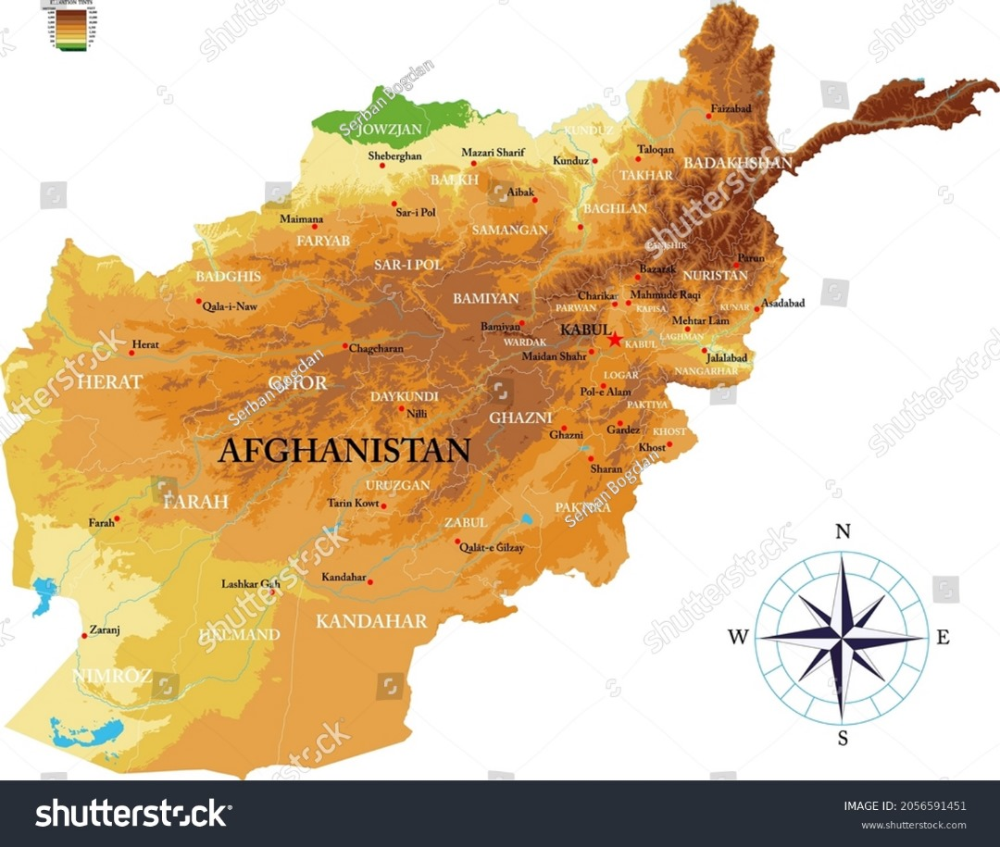
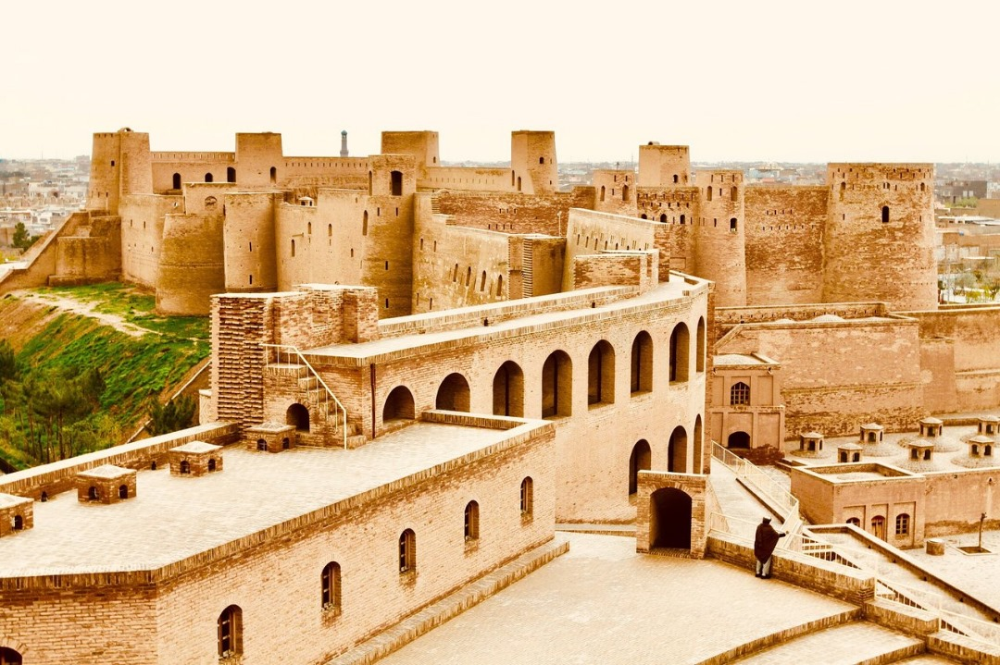
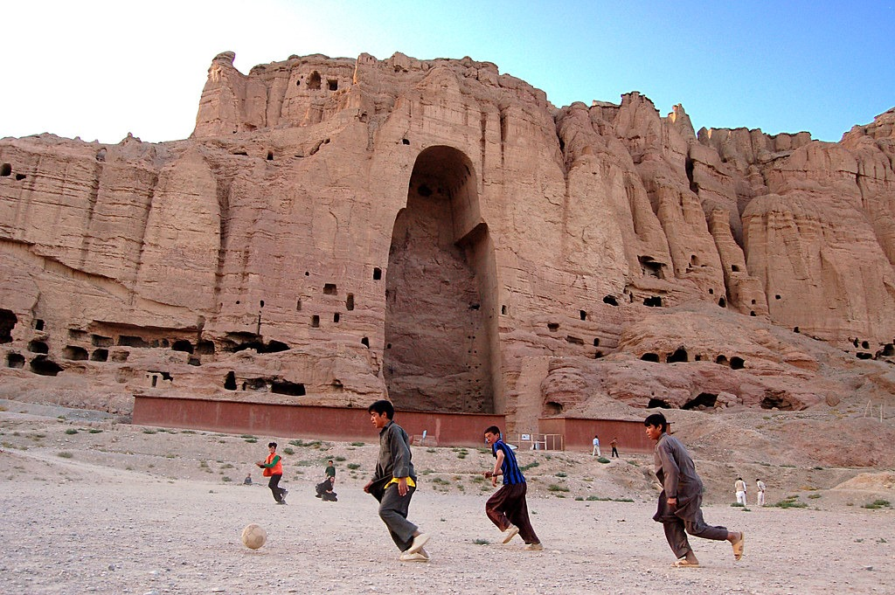
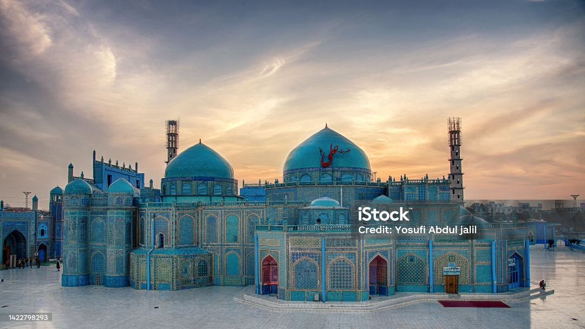
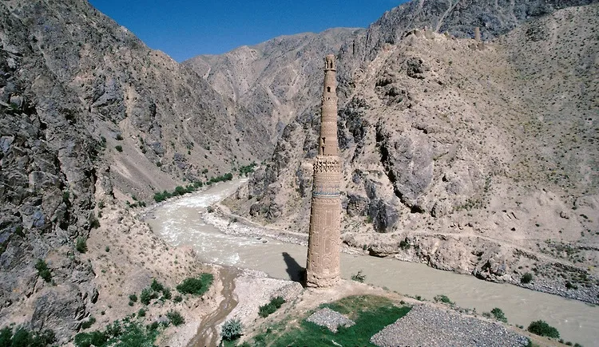

Afghanistan as a tuorist country
Information About Afghanistan
Cost of going: 200$
View:10$
- Tourism in Afghanistan is regulated by the Ministry of Information and Culture. There are at least 350 tourism companies operating in Afghanistan. Tourism was at its peak before the 1978 Saur Revolution, which was followed by the decades of war. Between 2013 and 2016, Afghan embassies issued between 15,000 and 20,000 tourist visas annua.
- Afghanistan has four international airports, which include Kabul International Airport, Mazar-i-Sharif International Airport, the Ahmad Shah Baba International Airport in Kandahar, and Herat International Airport. It also has a number of smaller domestic airports such as Bamyan Airport, Bost Airport, Chaghcharan Airport, Farah Airport, Fayzabad Airport, Ghazni Airport, Jalalabad Airport, Khost Airport, Kunduz Airport, Maymana Airport, Nili Airport, Tarinkot Airport, and Zaranj Airport.
- Guest houses and hotels are found in every city of Afghanistan. Some of the major hotels in Kabul are the Serena Hotel, the Hotel Inter-Continental Kabul, and the Safi Landmark Hotel. Most places in the country serve traditional Afghan cuisine.
Related Places

Arg Herat

Boda In Bamian

Mazar-e-Sakhi

Ghor Manar